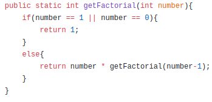

Factorial of number 5 is 5*4*3*2*1. Factorial of number 0 is 1.
To find the factorial of a number we need to multiply it by previous number's
factorial. So, factorial of number 5 can be found by following steps- factorial of 1 = 1factorial of 2 = 2* factorial of 1 = 2*1 = 2factorial of 3 = 3* factorial of 2 = 3*2 = 6factorial of 4 = 4* factorial of 3 = 4*6 = 24factorial of 5 = 5* factorial of 4 = 5*24 = 120
How to solve this problem?
We can use recursion to solve this problem very easily.
big-O Analysis
The solution was done using one recursive call.It takes O(N) time

Image: Solution